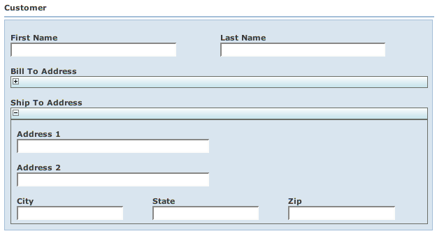

Back: BeanContexts Next: EnumeratedTypes
It is quite common for beans to reference other beans. WWB handles this for you. Let's look at wicket.contrib.webbeans.examples.nested.NestedBeanPage.
Embed:wicket.contrib.webbeans.examples.nested.NestedBeanPage
Note that we only create an instance of wicket.contrib.webbeans.examples.nested.Customer. The bill-to and ship-to wicket.contrib.webbeans.examples.nested.Address objects are automatically instantiated by WWB.
Here are the beanprops.
# Nested Bean Example
Customer {
props:
firstName, lastName,
billToAddress{colspan: 3},
shipToAddress{colspan: 3};
}
Address {
props:
address1{colspan: 3},
address2{colspan: 3},
city, state, zip;
}
Here we have specifications for the two beans we use: !Customer and !Address. The "colspan" specification tells BeanGridPanel to span the field across the three grid columns. In other words, this causes the field to span the entire row.
The result looks like:
By default, nested objects are presented in a wicket.contrib.webbeans.fields.BeanGridField - which is a nested version of the BeanGridPanel used by BeanForm. There are other variations of nested bean fields, such as wicket.contrib.webbeans.fields.BeanInCollapsibleField, wicket.contrib.webbeans.fields.BeanInlineField, and wicket.contrib.webbeans.fields.BeanWithParentLabelField. If we wanted to use BeanInCollapsibleField rather than the default, we could say:
...
Customer {
props:
firstName, lastName,
billToAddress{colspan: 3; fieldType: BeanInCollapsibleField },
shipToAddress{colspan: 3; fieldType: BeanInCollapsibleField };
}
Which results in collapsible fields for the Address beans:

These fields have a bar across the top that allows you to expand and contract the content.
Back: BeanContexts Next: EnumeratedTypes